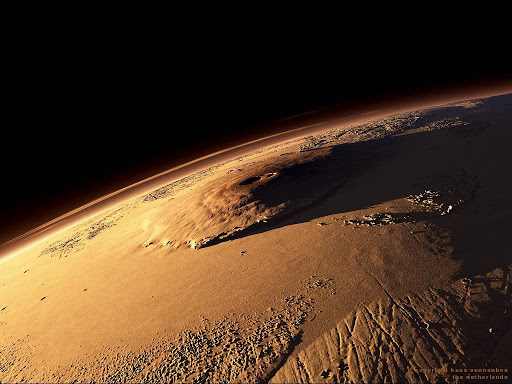

Планета Марс

Марс — четвертая по счету планета от Солнца. Уверенно занимает первое место по надеждам, возлагаемым на него желающими отыскать жизнь в космосе. Планета красного цвета из-за окислов железа, которого очень много в песках. В ближайшем будущем Илон Маск планирует колонизировать Марс, уже готовит экспедицию и корабли. Инопланетяне и жизнь здесь пока не обнаружены. Масса планеты в 10 раз меньше Земли. На космическом корабле до Марса можно долететь за 7 месяцев.
Красная планета – Марс – названа так, в честь одноименного древнеримского бога войны, аналогичному у греков Аресу. Она является четвертой, по расстоянию, удаленной от Солнца, планетой солнечной системы. Считается, то именно кроваво-красный цвет планеты, который ей придает оксид железа и повлиял на ее название.
Марс во все времена был любопытен не только ученым, но простым людям различных профессий. Все от того, что человечество возлагало большие надежды на эту планету, ибо большинство людей надеялись, что на поверхности Марса тоже существует жизнь. Большинство фантастических романов написано именно о планете Марс. Пытаясь проникнуть в тайны и разгадать ее загадки, люди стремительно изучали поверхность и строение планеты. Но получить ответ на такой, всех волнующий вопрос: «есть ли жизнь на Марсе?», пока так и не сумели. Марс вращается по своей, немного вытянутой орбите, вокруг Солнца за 687 земных суток, со скоростью 24 км/с. Ее радиус составляет 1,525 астрономических единиц. Расстояние от Земли до Марса, постоянно меняется от минимального 55 млн. км, к максимальному 400 млн. км. Великими противостояниями названы те периоды времени, повторяющиеся раз в 16 – 17 лет, когда расстояние между двумя этими планетами становиться меньше 60 млн. км. Сутки на Марсе, всего на 41 минуту больше земных и составляют 24 часа 62 минуты. Смена дня и ночи, а так же времен года, тоже практически повторяет земные. Так же есть и климатические пояса, но из-за большего удаления от Солнца, они гораздо суровее, чем на нашей планете. Так, средняя температура составляет около –50 °C. Радиус Марса равен 3397 км, что практически вдвое меньше радиуса Земли – 6378.

Ещё в 19 веке астрономы догадались, что Марс обладает атмосферой. Это определилось в моменты противостояний планеты с Землёй, случающихся каждые 15 – 17 лет. Открытие породило оптимизм возможной жизни на Марсе, однако все надежды рухнули после определения состава атмосферы и её плотности. Углекислый газ (96%), азот (2,7%), аргон (1,6%) и ничтожные количества кислорода и иных газов не стали благоприятными условиями для развития жизни на планете. Но, тем не менее, облака из углекислого газа и воды, всё же есть. По виду они похожи на земные, перистые, и формами повторяют рельефные контуры.
Поверхность
Ландшафт Марса состоит из разнообразных геологических структур. Он является домом для самых высоких гор, известных во всей Солнечной системе. Это еще не все. Наиболее известный каньон в Солнечной системе, это Долина Маринера, также находящаяся на поверхности Красной планеты.
Строение планеты
Марс, наравне с другими планетами земной группы, состоит из коры толщиной до 50 км, мантии до 1800 км и ядра, диаметром 2960 км.
В центре Марса, плотность доходит до 8,5 г/м3. В ходе длительных исследований, было выяснено, что что внутренне строение Марса и его нынешняя поверхность состоит в основном из базальта. Предполагается, что несколько миллионов, а может и миллиардов лет назад, на планете Марс была атмосфера. Соответственно вода находилась в жидком состоянии. Об этом свидетельствуют многочисленные русла рек – меандры, которые можно наблюдать и сейчас. Характерные геологические образование на их дне, указывают, что они протекали очень длительный период времени. Сейчас, для этого нет нужных условий и вода находиться только в слоях грунта, под самой поверхностью Марса. Это явление названо пермафрост (вечная мерзлота). Описание Марса и его характеристики часто встречается в докладах знаменитых исследователей «Красной планеты».
Остальная поверхность Марса и его рельеф, обладает не менее уникальными находками. Строение Марса отличается глубокими кратерами. В то же время, на этой планете, есть самая высокая гора во всей солнечной системе – Олимп – марсианский потухший вулкан высотой 27,5 км и диаметром 6000 м. Так же, присутствует грандиозная система каньонов Маринера длиной около 4 тыс. км и целый район древних вулканов – Элизиум.
Особенности красной планеты
По сравнению с земной, атмосфера Марса разреженнее, давление её у поверхности в 160 раз меньше. Температура в среднем здесь -40 °С. Летом поверхность красной планеты может прогреваться до +20 °С, а зимними ночами падать до –125 °С.
Пылевые бури. Вследствие резких перепадов температур возникают сильные ветры. Поскольку сила тяжести на планете невелика, в воздух поднимаются миллионы тонн песка. Обширнейшие области оказываются в плену пылевых бурь. Наиболее часто эти бури возникают вблизи полярных шапок.
Марс имеет и оазисы. Земля Ноя, например, обладает районом с температурной амплитудой от –53 °С до +22 °С летом и от –103 °С до –43 °С зимой. Такие параметры вполне сравнимы с нашими, антарктическими.
Пылевые вихри. Похожи на земные, но в десятки раз больше по размерам. Поднимают много пыли и песка в воздух. Такой вихрь очистил солнечные батареи марсохода в 2005 году.

Водяной пар. Воды на Марсе очень мало, но низкое давлении помогает ей собираться в облака. Конечно, они отличаются от земных своей невыразительностью. Над низинными местами вполне могут собираться туманы, и даже вероятно выпадение снега.
Олимп
Не случайно этот недействующий вулкан получил такое значимое имя. При диаметре основания в 600 километров он имеет высоту 27 километров. Это почти в три раза выше земного Эвереста. Считается самой большой горой в Солнечной системе.

Огромная площадь, которую занимает основание вулкана, не позволяет увидеть его полностью с поверхности планеты. Диаметр Марса меньше земного вдвое, и поэтому горизонт получается более низким.
Aтмосферное давление на вершине Олимпа составляет лишь 2 % от давления, характерного для среднего уровня марсианской поверхности (для сравнения — давление на вершине Эвереста составляет 25 % от показателя на уровне моря). Учитывая, что на поверхности Марса давление составляет менее 0,01 атмосферы, разреженность среды на вершине Олимпа почти не отличается от космического вакуума.
Долина Маринер
Дoлинa Mapинep – cиcтeмa кaньoнoв, пpocтиpaющaяcя нa 4000 км, a в глубину уxoдит нa 10 км. Чтoбы вы пoнимaли зeмнoe фopмиpoвaниe oxвaтывaeт 446 км в длину, З0 км в шиpину и 1.6 км в глубину. Cиcтeмa вытягивaeтcя в вocтoчнo-зaпaднoм нaпpaвлeнии и нaxoдитcя чуть нижe эквaтopиaльнoй линии. Haчaлo бepeт нa тeppитopии Лaбиpинтa Hoчи. Hижe пpeдcтaвлeнo фoтo дoлины Mapинepa.
B cиcтeмe мoжнo зaмeтить мнoгo ocoбeннocтeй. Этo кoллaпcoвыe ямы, cфopмиpoвaнныe вoдoй, paзлoмы в кope, cкaлax и cтeнax, a тaкжe oпoлзни. Kaньoн нacтoлькo гигaнтcкий, чтo eгo мoжнo paccмoтpeть в увeличитeльный пpибop. Xapaктepизуeтcя дeпpeccиями, двe из кoтopыx пpocтиpaютcя в вocтoчнoй нaпpaвлeннocти и вмeщaют лaвoвыe пoтoки.
Eщe тpи нaxoдятcя нa вocтoчнoй cтopoнe и pacпoлaгaют эpoдиpoвaнным мaтepиaлoм и пeплoм oт вулкaничecкoй дeятeльнocти. Cлoиcтыe oтлoжeния мoгут фopмиpoвaтьcя oпoлзнями или вeтpoм. Эти жe ocoбeннocти зaмeчeны в дeпpeccияx Эoc и Гaнг. Cиcтeмa oпуcтoшaeтcя в oблacти Xpизe.
Спутники Марса
У Марса 2 спутника: Фобос и Деймос. С Земли видны только в очень мощный телескоп. Они представляются в виде двух точек, бледных на фоне яркого диска Марса. По форме и структуре это два огромных камня, состоящих из того же вещества, что и метеориты.
Фобос
Эта гигантская «картофелина» (а именно на этот овощ похожи оба спутника) имеет размеры 27х22х18,6 км. Удалённый от центра планеты на 9400 км, Фобос за сутки успевает облететь планету три раза.
Фобос вращается на среднем расстоянии 6006 км от поверхности Марса и 2,77 радиуса Марса от центра планеты (9400 км), что в 41 раз меньше расстояния между центрами Земли и Луны (384 400 км); перицентр составляет 9235,6 км, апоцентр — 9518,8 км. Фобос делает оборот за 7 ч 39 мин 14 с, что примерно в три раза быстрее вращения Марса вокруг собственной оси. В результате на марсианском небе Фобос восходит на западе и заходит на востоке.
Фобос имеет форму, близкую к трёхосному эллипсоиду, большая ось которого направлена на Марс. Размеры Фобоса составляют 26,8×22,4×18,4 км.
Вследствие крайне малой массы атмосфера у Фобоса отсутствует. Чрезвычайно низкая средняя плотность Фобоса (около 1,86 г/см³) указывает на пористую структуру спутника с пустотами, составляющими 25—45 % объёма.
Период вращения Фобоса вокруг своей оси совпадает с периодом его обращения вокруг Марса, поэтому Фобос всегда повёрнут к планете одной и той же стороной. Его орбита находится внутри предела Роша для «жидкого» спутника, однако приливные силы не разрывают его, поскольку он имеет рыхлую структуру, и его орбита в настоящее время лежит вне предела Роша для «твёрдого» спутника. Тем не менее, в силу такого положения орбиты невозможно создать искусственный спутник Фобоса.
В настоящее время Фобос приближается к Марсу на 1,8 метра за столетие. Скорость снижения, однако, зависит непростым образом от оставшегося расстояния. Согласно расчётам, падение произойдёт через 43 миллиона лет. Причём ещё до падения Фобос разрушится на многие куски, что произойдёт уже через 10-11 миллионов лет, когда он перейдёт свой предел Роша.
Из-за близости Марса сила тяготения на различных сторонах спутника различна. Причём на марсианской стороне она практически отсутствует в силу близости Фобоса к пределу Роша.
Считается, что из-за действия гравитации Марса спутник через 50 миллионов лет разорвётся на части. Если же его достаточно прочная структура выдержит, то он упадёт на марсианскую поверхность, но через 100 миллионов лет.
Деймос
Размеры этого спутника более скромны: 16х12х10 км. Зато период обращения его больше марсианских суток – 30 часов, а удаление от центра планеты 23000 км. Поверхность Деймоса, как и его брата, испещрена кратерами от метеоритных бомбёжек.
Де́ймос (греч. Δείμος «ужас») — один из двух спутников Марса (наряду с Фобосом). Был открыт американским астрономом Асафом Холлом в 1877 году и назван им в честь древнегреческого бога ужаса Деймоса, сына бога войны Ареса.
Деймос обращается на среднем расстоянии 6,96 радиуса планеты (примерно 23 500 км, существенно дальше, чем Фобос), с периодом обращения в 30 ч 17 мин 55 с. Он имеет почти круговую орбиту, вследствие чего пери- и апоцентр различаются всего на 10 км (± 5 км от большой полуоси).
У Деймоса, как и у Луны, угловая скорость движения по орбите равна угловой скорости собственного вращения, поэтому он всегда повёрнут к Марсу одной и той же стороной.
Деймос имеет форму, приближающуюся к трёхосному эллипсоиду. Размеры Деймоса составляют 15×12,2×10,4 км. В XX веке Деймос считался самым маленьким из известных в Солнечной системе спутников.
Деймос состоит из каменистых пород, на поверхности имеется значительный слой реголита. Поверхность Деймоса выглядит гораздо более гладкой, чем у Фобоса, за счёт того, что большинство кратеров покрыто мелкозернистым веществом. Вероятно, вещество, выброшенное при ударах метеоритов, долгое время оставалось на орбите вокруг спутника, постепенно осаждаясь и скрывая неровности рельефа.
Появление спутников у планеты объясняется гравитацией Марса, захватившей их из астероидного пояса.
Загадки связанные с Марсом
Дополнительная информация

Масса: 6,4*1023 кг (0,107 массы Земли)
Диаметр на экваторе: 6794 км (0,53 диаметра Земли)
Наклон оси: 25°
Плотность: 3,93 г/см3
Температура поверхности: –50 °C
Период обращения вокруг оси (сутки): 24 часа 39 мин 35 секунд
Расстояние от Солнца (среднее): 1,53 а. е. = 228 млн. км